645．
645．7．在微积分中提供严密性的尝试
随着微积分的概念与技巧的扩展，人们努力去补充被遗漏的基础。在牛顿和莱布尼茨不成功地企图去解释概念并证明他们的程序是正确的之后，一些微积分方面的书出现了。它们试图澄清混乱，但实际上却更加混乱。
牛顿探讨微积分的方法比莱布尼茨的方法容易严密化，虽则后者的方法更富于成果，更便于应用。英国人想，他们如果把牛顿和莱布尼茨的方法与欧几里得几何联系起来，就能使两者都保证严密。但是他们将牛顿的瞬（moments，即他的不可分增量）和他处理连续变量时用的流数混淆了。追随莱布尼茨的欧洲大陆上的人们用微分进行计算，并试图把这个概念严密化。微分有时被当作无穷小量，即非零的但又无任何有限大小的量，有时又被当作零。
泰勒（Brook Taylor，1685—1731）是1714年到1718年的皇家学会秘书，在他的《增量法及其逆》（Methodus Incrementorum Directa et Inversa，1715）中，他力图搞清微积分的思想，但他把自己局限于代数函数与代数微分方程。他以为他总能只与有限增量打交道，但在增量过渡到流数时，他就糊涂了。正当英国学者试图将微积分和几何或速度的物理概念联系起来的时候，泰勒的阐述是建立在我们叫做有限差分的基础上的，因为它本质上是算术的，所以得不到许多支持者。
从辛普森（Thomas Simpson，1710—1761）的《有关流数的一篇新论文》（A New Treatise on Fluxions，1737）一文中，也可以看到18世纪致力于严密性的工作是含糊不清的，也是不成功的。辛普森在一些预备定义之后，这样定义流数：“一个流动的量，按它在任何一个位置或瞬间所产生的速率（从该位置或瞬间起持续不变），在一段给定的时间内，所均匀增长的数量称为该流动量在该位置或瞬间的流数。”用我们的话说，辛普森是用
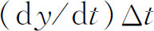
来定义导数。其他一些作者放弃了这种想法。法国数学家罗尔（Michel Rolle）在一个地方告诫说，微积分是巧妙的谬论的汇集。18世纪仍然表明有对微积分的新攻击。其中最强的攻击来自贝克莱主教（1685—1753），他害怕机械论和决定论对宗教日益增长的威胁。1734年，他发表了《分析学者，或致一个不信教的数学家。其中审查现代分析的对象、原则与推断是否比之宗教的神秘与信条，构思更为清楚，或推理更为明显》（The Analyst，Or A Discourse Addressed to an Infidel Mathematician．Wherein It is examined whether the Object，Principles，and Inferences of the modern Analysis are more distinctly conceived，or more evidently deduced，than Religious Mysteries and Points of Faith）。“先除掉你自己眼睛里的障碍，你才能看得清去拨掉你兄弟眼中的灰尘。”［“不信教的数学家”指哈雷（Edmond Halley）。］(45)
贝克莱正确地指出了那时数学家们是归纳地而非演绎地推进，他们对自己的每一步既没有给出逻辑，也没有说明理由。贝克莱批判了牛顿的许多论点，例如在《求曲边形的面积》（De Quadratura）一文中，牛顿说他避免了无穷小，他给x以增量o，展开
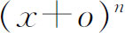
，减去 ，再除以o，求出
，再除以o，求出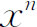
的增量与x的增量之比，然后扔掉含o的项，从而得到 的流数。贝克莱说牛顿首先给x一个增量，然后又让它是零，这违背了背反律，而且所得的流数实际上是0/0。贝克莱还攻击洛必达和其他欧洲学者提出的微分法。贝克莱说微分之比应该决定割线而不是决定切线；忽略了高级无穷小才消除了误差。因此“依靠双重错误你得到了虽然不科学却是正确的结果”，这是因为错误互相抵偿的缘故。他还挑中二阶微分d（dx）做文章，因为d（dx）是dx的微分，而dx本身是一个很难识别的量。他说：“在每一门其他科学中，人们用他们的原理证明他们的结论，而不是用结论来证明他们的原理。”
的流数。贝克莱说牛顿首先给x一个增量，然后又让它是零，这违背了背反律，而且所得的流数实际上是0/0。贝克莱还攻击洛必达和其他欧洲学者提出的微分法。贝克莱说微分之比应该决定割线而不是决定切线；忽略了高级无穷小才消除了误差。因此“依靠双重错误你得到了虽然不科学却是正确的结果”，这是因为错误互相抵偿的缘故。他还挑中二阶微分d（dx）做文章，因为d（dx）是dx的微分，而dx本身是一个很难识别的量。他说：“在每一门其他科学中，人们用他们的原理证明他们的结论，而不是用结论来证明他们的原理。”至于导数被当作y与x消失了的增量之比，即dy与dx之比，贝克莱说它们“既不是有限量也不是无穷小量，但又不是无”。这些变化率只不过是“消失了的量的鬼魂。当然……我想，能消化得了二阶或三阶流数的人，是不会吞食了神学论点就要呕吐的”。他下结论说，流数的原理并不比基督教的更清楚。他否定现代分析的对象、原理和推理比宗教的神秘和信仰的论点更为构思清楚，推理明显。
朱林（James Jurin，1684—1750）对《分析学者》作了回击。1734年他发表了《几何学，非不信教的朋友》（Geometry，No Friend to Infidelity）。在此文中他坚持认为流数对精通几何的人说来是清楚的。然后他徒劳地试图解释牛顿的瞬与流数。例如朱林将变量的极限定义为“被变量连续地逼近的某确定的量”，而且可逼近得比任何给定的差更近。然而，他又加上一句：“但永不超出它。”他将这个定义应用于变量之比（差商）。贝克莱的使人无言以对的回击，名叫《捍卫数学中的自由思想》（A Defense of Freethinking in Mathematics，1735）(46)的文章指出，朱林是在捍卫他所不了解的东西。朱林作了反击，但并没有把事情搞清楚。
而后，罗宾斯（Benjamin Robins，1707—1751）以他的几篇专论和一本书《论艾萨克·牛顿爵士的流数法以及最初比与最终比方法的本质与可靠性》（A Discourse Concerning the Nature and Certainty of Sir Isaac Newton's Method of Fluxions and of Prime and Ultimate Ratios，1735）参加争论。罗宾斯忽视了牛顿的第一篇文章中的瞬，而强调流数以及最初比和最终比。例如他这样定义极限：“当一个变量能以任意接近程度逼近一最终的量（虽然永不能绝对等于它），我们定义这个最终的量为极限。”他认为流数是一个正确的想法，而最初比和最终比仅仅是一种解释。尽管他是用变量逼近极限来做解释的，但罗宾斯补充说流数法的建立并不求助于极限。他不承认无穷小。
为了回击贝克莱，麦克劳林（Colin Maclaurin，1698—1746）在他的《流数论》（Treatise of Fluxions，1742）中，企图建立微积分的严密性。这是一个值得赞扬的却并不正确的努力。像牛顿一样，麦克劳林喜爱几何，因而他试图根据希腊几何和穷竭法（特别是阿基米德的穷竭法）建立流数学说。他希望这样可以避开极限概念。他的本领是熟练地使用几何，所以他常劝别人用几何而忽视分析。
欧洲大陆上的数学家更多地依靠代数表达式的形式演算，而不是几何。这种方法的最重要代表是欧拉，他拒绝把几何作为微积分的基础，并纯粹形式地研究函数，即从它们的代数（分析）表达式来论证。
他拒绝无穷小的概念，这里所谓的无穷小是指非零而又小于任何指定大小的量。在他1755年的《原理》（Institutiones）中，他论证道(47)：
毫无疑问，任何一个量可减小到完全消失得无影无踪的程度。但是，一个无穷小量无非是一个正在消失的量，因而它本身就等于0。这与无穷小的定义也是协调的，按照无穷小的定义，它应小于任一指定的量；它无疑应当就是无；因为除非它等于0，否则总能给它指定一个和它相等的量，而这是与假设矛盾的。
由于欧拉排除了微分，他就必须解释对他说来是0/0的dy/dx怎么能等于一个确定的数。对此，他像下面这样做：因为对任何数n，有n·0＝0，所以n＝0/0。导数正是确定0/0的一个方便的途径。为了证明在有dx出现时可以丢掉
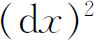
，欧拉说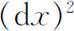
在dx之前消失，所以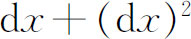
与dx之比应为1。他确实承认∞是一个数，例如他认为和1＋2＋3＋…是一个数。他也区分∞的阶。例如a/0＝∞，而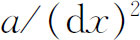
是二阶无穷大等。欧拉进而得到
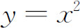
的导数。他给x以增量ω，则y的增量就是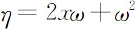
，而比η/ω就是2x＋ω。然后他说，当较小的ω被舍去，这个比值就趋近2x。然而，他强调说微分η，ω是绝对的0，由它们只能知道它们相互的比值最终化为一个有限值，此外推不出任何其他东西。这样，欧拉不折不扣地接受了如下的说法：存在这样的量，它们本身是绝对的0，而它们的比值是有限数。在《原理》第3章中，欧拉说了这个性质的更多“道理”，他在那里鼓励读者说：在导数中并没有隐藏通常想象的那么大的神秘性，而那种神秘性使许多人在心目中怀疑微积分。作为欧拉推理的另一个例子，我们看一下他在《原理》（1755）第180节中关于
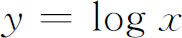
的微分的推导。用x＋dx代替x得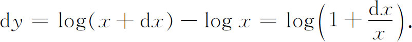
这里，他联想他的《引论》（1748）第一卷第7章中的结果：
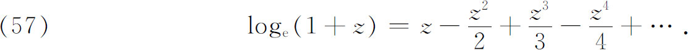
以dx/x代z得
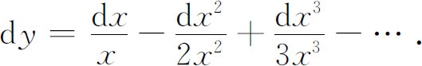
由于第一项后各项均消失了，我们有
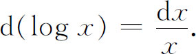
我们应该记住欧拉的书是他那时候的标准课本。欧拉形式化方法（formalistic approach）的真正贡献是把微积分从几何解放出来，而使它建立在算术和代数的基础上。这一步至少为基于实数系统的微积分的根本论证开辟了道路。
拉格朗日在1772年的一篇文章(48)以及在《解析函数论》（Théorie des fonctions analytigues）(49)中作了重建微积分基础的最雄心勃勃的尝试。他的书的小标题暴露了他的无知。这个小标题是：“包含着微分学的主要定理，不用无穷小，或正在消失的量，或极限与流数等概念，而归结为有限量的代数分析艺术。”
拉格朗日批评牛顿的方法时指出，关于弦与弧的极限比，牛顿认为弦与弧不是在它们消失前或消失后相等，而是当它们消失时相等。正如拉格朗日正确地指出的：“此方法有很大不便，即它把所考虑的量在失却其为量的状态下，仍看作是量；因为虽则对两个量，只要它们还保持有限，就总可以适当地设想它们的比，但是，当它们一旦同时都变为无时，它们的比在我们的头脑里就不再有清楚而确切的想法了。”他说，麦克劳林的《流数论》表明要证明流数法是何等困难。他对莱布尼茨和伯努利的小零（即无穷小）及欧拉的绝对零同样不满意，他说，所有这些，“虽然在现实中是对的，但作为一门科学的基础仍不够清楚，因为科学的确实性应基于它自身的证据”。
拉格朗日想给微积分提供古人论证的全部严密性，并且他提出要把微积分归结为代数来做到这一点。他所指的代数，正如我们前面所提到的，包括作为多项式推广的无穷级数。事实上，对拉格朗日来说，函数论只是与函数的导数有关的代数的一部分。拉格朗日特别提倡使用幂级数。他以适合于他的谦卑态度指出，牛顿没有想到这个方法是很奇怪的。
他当时希望使用这一事实，任何一个函数f（x）能表示成这样：
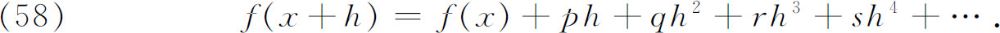
其中系数p，q，r，…含x，但与h无关。然而，他希望在进一步研究之前确认这样的幂级数展开总是可能的。他说，当然，这可以通过任何多个熟悉的例子来说明。但他也的确承认有例外的情况。拉格朗日想到的例外情况有f（x）的某些导数可变为无穷，或者函数与导数都变为无穷。这些例外只发生在一些孤立点上，因此拉格朗日不把它们计算在内。他以类似的骑士风度来处理另一个困难。拉格朗日和欧拉都毫无疑问地接受这样一点，将函数展开成h的整数幂或分数幂的级数肯定是可能的。但拉格朗日希望排除对分数幂的需要，他相信只有在f（x）中含根式时才会出现分数幂，但他又把这种情况当作例外而不去理它，因此他就立即处理（58）式。
拉格朗日用一个有点累赘、但却是纯形式的论据断定，正如能从f（x）得到p一样，我们可以从p得到2q，并对（58）的其他系数r，s，…也可得到类似结论。因此如用f′（x）表示p，以f″（x）表示从f′（x）导出的函数［如同从f（x）导出f′（x）那样］，则
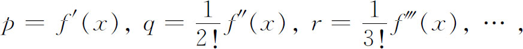
因此（58）就给出
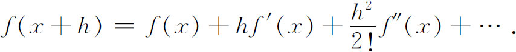
这时，拉格朗日得出这样的结论：最后这个“表达式具有优越性，它清楚地显示出各项之间的相互依赖关系。特别是只要知道怎样形成第一个导函数，就可以照样形成级数中的其他导函数”。稍后，他又补充道：“只要有了微分学的初步知识，就会明白这些导函数正是
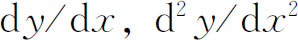
，…”。拉格朗日还指出怎样由f（x）导出p或f′（x）。在那里，他用（58）式，并忽略第二项以后的各项，得
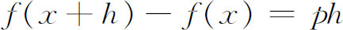
。他将两边同除以h，得出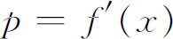
。实际上，拉格朗日关于函数可展成幂级数的假定是一个系统性的弱点。现在知道的关于这种可展性的各种判据都涉及各阶导数的存在性。但导数的存在性正是拉格朗日想要避免的。他为幂级数辩护的论据只是使函数能否展开的问题更糊涂。即使在函数可以展成级数时，也只有能得到第一个导数［即f′（x）］后，才能用拉格朗日所说的方法，而这里拉格朗日所做的正是他前人比较粗糙的东西的重复。最后，实际上并未讨论级数（58）的收敛问题。他倒的确指出了，当h充分小时，保留的最后一项比舍去的各项要大。他在这本书里还给出了泰勒展开余项的拉格朗日形式（第20章第7节），但是它对上面的展开法不起作用。尽管有这些弱点，拉格朗日探讨微积分的方法在相当长一段时期中受到很高的赞赏。后来，它被抛弃了。
拉格朗日相信他已省却了极限概念。他确实承认(50)微积分可以在极限理论的基础上建立起来，但是他说，这种必须使用的抽象推理与分析精神无关。尽管他的方法不妥，但他确实像欧拉那样，为将分析的基础脱离几何与力学做出了贡献；而且在这方面，他的影响是决定性的。虽则这种分离不是教学法所期望的，因为它阻碍直观的了解，但是它使逻辑的分析必须自立这一点变得很清楚。
近18世纪末，一个数学家、战士和行政管理人员卡诺（Lazare N．M．Carnot，1753—1823）写了一本通俗的畅销书《关于无穷小分析的形而上学的思考》（Réflexions sur la métaphysique du calcul infinitésimal，1797），在这本书里，他想使微积分精确化。他试图证明逻辑是以穷竭法为依据的，而处理微积分的全部方法只不过是简化或捷径，把它们建立在穷竭法的基础上，就能够给它们提供逻辑。累加推敲之后，他像贝克莱一样得出这样的结论：微积分的通常论证中的错误是互相抵偿的。
在使微积分严密化的大量努力中，有少数几个是路子对头的，其中最有名的是达朗贝尔的和再早一点的沃利斯的工作。达朗贝尔相信牛顿有正确的想法，而他自己所做的只是解释牛顿的意思，在著名的《科学、艺术和工艺的百科全书》（Encyclopédie ou Dictionnaire Raisonné des Sciences，des Arts，et des Métiers，1751—1780）中，达朗贝尔在“微分”这个条目下写道：“牛顿从未把微分学当作无穷小量的计算，而是作为最初比和最终比的方法，即求出这些比的极限的一种方法。”但是达朗贝尔把微分定义为“无穷小量或者至少小于任何给定值的量。”他是相信莱布尼茨的微积分能建立在微分三规则之上的；然而他更喜欢把导数看成极限。在关于极限的使用的研究中，他也像欧拉那样论证0/0可以等于任何量。
他在另一篇论文中说道：“极限、极限论是微积分的真正抽象……它决不是微分学中的无穷小量的一个问题，它独特地是有限量的极限问题。这样，无穷大和无穷小量，它们相互间较大、较小的空谈，对微分学说来是全然无用的。”无穷小仅仅是一种说法，用以避免冗长的极限术语的描述。事实上，达朗贝尔给出了极限的正确定义的一个很好的近似：一个变量趋近一个固定量，趋近的程度小于任何给定量。虽则这里他也讲到变量永远达不到极限，但他没有结合并利用他的基本正确思想做出微积分的形式阐述。
他在许多观点上仍然是含糊的，例如他把曲线的切线定义为当割线与曲线的两个交点变成一个的时候割线的极限。这种含糊性，特别是他叙述极限概念时的含糊性，使许多人怀疑一个变量能否达到它的极限。由于没有明白而正确的表达，达朗贝尔告诫学习微积分的学生们：“坚持，你就会有信心。”
拉克鲁瓦（Sylvestre-François Lacroix，1765—1843）在他的著作《微积分学教程》（Traité du calcul différentiel et du calcul intégral）的第二版（1810—1819）中，对两个量的比，当其中每一个都趋近0时，能趋近于一个作为极限的确定值这个问题有较明确的思想。他给出了比
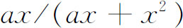
，并指出这个比与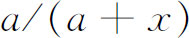
相同，而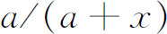
当x趋近于0时趋近于1。进而，他指出1是当x甚至通过负值趋于0时的极限。然而，他也说当分子与分母是0时的极限的比值这样的话，甚至还用0/0这个记号。他确实引进用导数表示的函数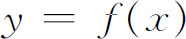
的微分dy，即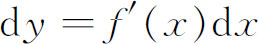
。因此，若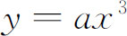
，则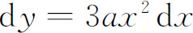
。他第一次使用“微分系数”这个术语表示导数，于是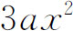
就是微分系数。18世纪的几乎每一个数学家都对微积分的逻辑作了一些努力，或至少是讲了一些这方面的话，虽则有一两个路子对头，但所有的努力都没有结果。区别很大的数和无穷大“数”是很困难的。当时，人们认为这样的结论似乎是很清楚的：对每一个n成立的定理，必须对n是无穷大也成立。同样，差商可以被导数代替，有限项的和与积分也是很难区分的。那时，数学家们在有限同无限情形之间随意通行。1755年，欧拉在《原理》中区分了函数的增量与该函数的微分，也区分了和与积分，但这种区分并未立即被大家采用。18世纪所有这方面的努力可以用伏尔泰（Voltaire）关于微积分的描述来概括，他把微积分描述为“计算和度量一个其存在性是不可思议的事物的艺术”。
在几乎完全缺乏基础的情况下，数学家们怎么可能对各种函数进行演算呢？除了大大地依靠物理和直观的意义之外，他们思想上的确还有一个模型——较简单的代数函数，如多项式与有理函数等。他们把他们在这些简单而具体的函数中发现的性质推广到所有的函数上去。这些性质诸如连续性、孤立的无穷大和不连续点的存在性可展成幂级数，以及导数和积分的存在性等。在很大程度上，由于研究振动弦，他们被迫将函数概念（像欧拉那样）推广到任何随意画出的曲线（例如欧拉的混合函数、不规则函数或不连续函数），这时，他们不能再以较简单的函数为前导了。而当对数函数必须推广到负数与复数时，他们实际上是在完全没有可靠基础的情况下工作的，这正是为什么那时对这类事情的争论很普遍的原因。直到19世纪前，微积分的严密化一直未完成。
参考书目
Bernoulli，James：Opera，2 vols．，1744，reprinted by Birkhaüser，1968．
Bernoulli，John：Opera Omnia，4 vols．，1742，reprinted by Georg Olms，1968．
Boyer，Carl B．：The Concepts of the Calculus，Dover（reprint），1949，Chap．4．
Brill，A．＆M．Nöther：“Die Entwicklung der Theorie der algebraischen Funktionen in älterer and neuerer Zeit，”Jahres．der Deut．Math．-Verein．，3，1892/1893，107-566．
Cajori，Florian：“History of the Exponential and Logarithmic Concepts，”Amer．Math．Monthly，20，1913，5-14，35-47，75-84，107-117，148-151，173-182，205-210．
Cajori，Florian：A History of the Conceptions of Limits and Fluxions in Great Britain from Newton to Woodhouse，Open Court，1919．
Cajori，Florian：“The History of Notations of the Calculus，”Annals of Math．，（2），25，1923，1-46．
Cantor，Moritz：Vorlesungen über Geschichte der Mathematik，B．G．Teubner，1898 and 1924，Vols．3 and 4，relevant sections．
Davis，Philip J．：“Leonhard Euler's Integral：A Historical Profile of the Gamma Function，”Amer．Math．Monthly，66，1959，849-869．
Euler，Leonhard：Opera Omnia，B．G．Teubner and Orell Füssli，1911—；see references to specific volumes in the chapter．
Fagnano，Giulio Carlo：Opera matematiche，3 vols．，Albrighi Segati，1911．
Fuss，Paul H．von：Correspondance mathématique et physique de quelques célèbres géomètres du XVIIIème siècle，2 vols．，1843，Johnson Reprint Corp．，1967．
Hofmann，Joseph E．：“Über Jakob Bernoullis Beiträge zur Infinitesimal-mathematik，”L'Enseignement Mathématique，（2），2，61-171，1956；also published separately by Institut de Mathématiques，Genéve，1957．
Mittag-Leffler，G．：“An Introduction to the Theory of Elliptic Functions，”Annals of Math．，（2），24，1922—1923，271-351．
Montucla，J．F．：Histoire des mathématiques，A．Blanchard（reprint），1960，Vol．3，pp．110-380．
Pierpont，James：“Mathematical Rigor，Past and Present，”Amer．Math．Soc．Bulletin，34，1928，23-53．
Struik，D．J．：A Source Book in Mathematics，1200—1800，Harvard University Press，1969，pp．333-338，341-351，374-391．
————————————————————
(1) 蒙戈尔菲耶两兄弟在1783年第一次成功地乘上充满热气的气球上了天。
(2) Comm．Acad．Sci．Petrop．，2，1727．
(3) Opera，（2），25，45-157．
(4) Opera，（1），9，217-239，305-307．
(5) Hist．de l'Acad．de Berlin，24，1768，327-354，pub．1770＝Opera Math．，2，245-269．
(6) 在他的《引论》二卷第1章中，欧拉引入了“不连续”或混合函数，它是指在不同定义域，函数需要不同的解析表达式。但是这概念在此著作中没有起作用。
(7) Opera，（1），8，Chap．4，p．74．
(8) Acta Erud．，1699＝Opera，2，868-870．
(9) Opera，1，393-400．
(10) Math．Schriften，5，350-366．
(11) Mém．de l'Acad．des Sci．，Paris，1702，289 ff．＝Opera，1，393-400．
(12) Acta Erud．，1712，167-169＝Math．Schriften，5，387-389．
(13) Phil．Trans．，29，1714，5-45．
(14) Miscellanea Berolinensia，7，1743，172-192＝Opera，（1），14，138-155．
(15) Phil．Trans．，25，1707，2368-2371．
(16) 此处还应要求
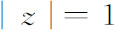
。——译者注(17) Introductio，Chap．8．
(18) Hist．de l'Acad．de Berlin，5，1749，139-179，pub．1751＝Opera，（1），17，195-232．
(19) 在欧拉的早期著作中，用infinitus的第一字母i表示一个无穷大的量，1777年后，他用i代表
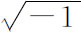
。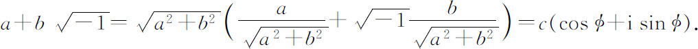
(21) Acta Erud．，1694，262-276＝Opera，2，576-600．
(22) 刘维尔（Joseph Liouville）证明了这一点（Jour．de l'Ecole Poly．，14，1833，124-193）。
(23) Acta Erud．，Oct．1698，462 ff．＝Opera，1，249-253．
(24) Giornale dei Letterati d' Italia，Vols．19 ff．
(25) Opera，2，287-292．
(26) Giornale dei Letterati d'Italia，30，1718，87 ff．＝Opera，2，304-313．
(27) NoviComm．Acad．Sci．Petrop．，6，1756/1757，58-84，pub．1761＝Opera，（1），20，80-107．
(28) Novi Comm．Acad．Sci．Petrop．，6，1756/1757，37-57，pub．1761＝Opera，（1），20，58-79．
(29) Novi Comm．Acad．Sci．Petrop．，7，1758/1759，3-48，pub．1761＝Opera，（1），20，153-200．
(30) Vol．1，Sec．2，Chap．6＝Opera，（1），11，391-423．
(31) Novi Comm．Acad．Sci．Petrop．，7，1758/1759，3-48，pub．1761=Opera，（1），20，153-200与Inst．Cal．Integ．，1，645=Opera，（1），11，645．
(32) Hist．de l'Acad．des Sci．，Paris，1786，616-643与644-683．
(33) 在这本书中“function”的用法被误解了。他研究椭圆积分，并时常是变上限的椭圆积分。这些当然是上限的函数。但现在所指的“椭圆函数”是由阿贝尔与雅可比在后来引入的。
(34) Fuss，Correspondance，1，3-7．
(35) Fuss，Correspondance，1，11-18．
(36) Comm．Acad．Sci．Petrop．，5，1730/1731，36-57，pub，1738＝Opera，（1），14，1-24．
(37) Novi Comm．Acad．Sci．Petrop．，16，1771，91-139，pub．1772＝Opera，（1），17，316-357．
(38) Comm．Soc．Gott．，II，1813＝Werke，3，123-162，p．149（部分）．
(39) Mém．de l'Acad．des Sci．，Paris，1739，425-436，与1740，293-323．
(40) Comm．Acad．Sci．Petrop．，7，1734/1735，174-193，pub．1740＝Opera，（1），22，36-56．
(41) Comm．Acad．Sci．Petrop．，10，1738，102-115，pub．1747＝Opera，（2），6，175-188．
(42) Novi Comm．Acad．Sci．Petrop．，14，1769，72-103，pub．1770＝Opera，（1），17，289-315．
(43) Nouv．Mém．de l' Acad．de Perlin，1773，121-148，pub．1775＝Œuvres，3，619-658．
(44) Mém．des sav．étrangers，1772，536-544，pub．1776＝Œuvres，8，369-477．
(45) George Berkeley：The Works，G．Bell and Sons，1898，Vol．3，1-51．
(46) George Berkeley：The Works，G．Bell and Sons，1898，Vol．3，53-89．
(47) Opera，（1），10，69．
(48) Nouv．Mém．de l'Acad．de Berlin，1772，pub．1774＝Œuvres，3，441-476．
(49) 1797；2nd ed．，1813＝Œuvres，9．
(50) Œuvres，1，325．